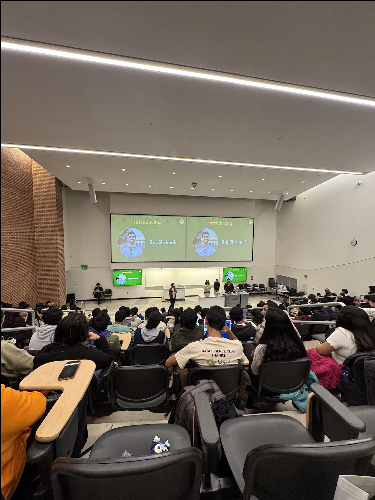
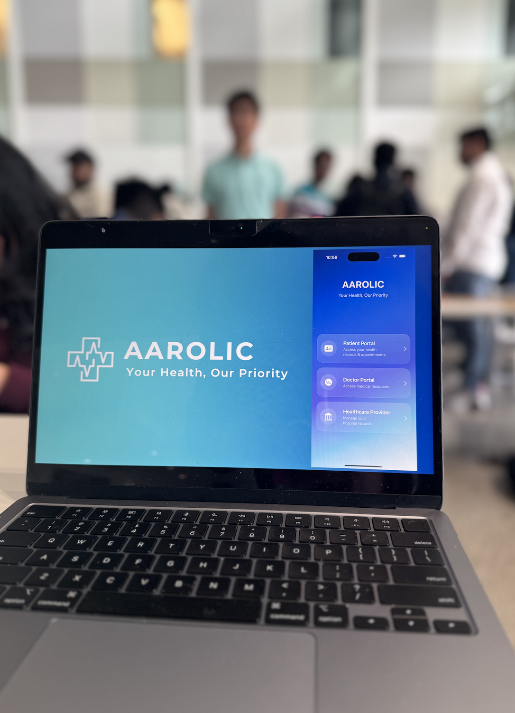
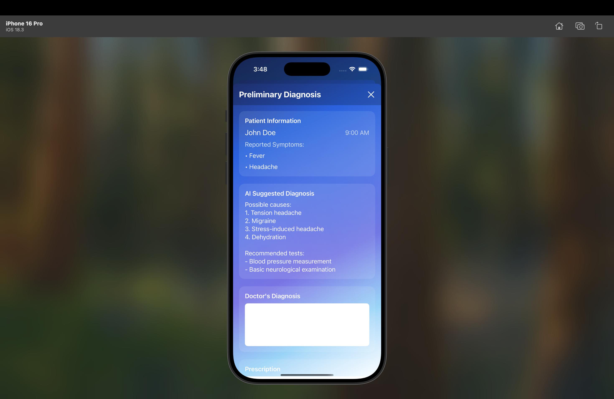

Hi! I'm Aaditi Singhal
Welcome to my narrative journey
Multimodal Literal Narrative
Coding for a project tirelessly for 28 hours straight, with droopy eyes and the last remnants of energy clinging to me, I glanced up at the screen—twenty more hours to go. The hum of keyboards clicking, hushed whispers of debugging woes, and the soft glow of laptop screens filled the vast hall of Hacklytics 2025, a premier hackathon hosted at Georgia Tech. Nearly 3,000 attendees from various states had gathered, each with a dream, a plan, a hunger to create. And among them was me, an international student, battling not just the pressure of time, but a struggle more personal—my voice.
From the moment I stepped into the venue, I knew the challenge ahead wasn't limited to just coding. Finding the right teammate felt like walking a tightrope, and language was the gust of wind threatening to throw me off balance. Originally from India, I was fluent in Hindi, but having spent the majority of my childhood in England, my British accent stood out—too distinct, too sharp, too foreign. The first day of the hackathon, right after registration, was a battlefield of introductions and alliances. Each individual I approached glanced at my profile, nodding in approval at my skills, yet hesitation flickered in their eyes the moment I spoke. My words, though in English, felt alien to them. It wasn't that they didn't understand me entirely, but something about my accent created a distance, a barrier too inconvenient to cross.
Then I met Gopal. A fellow Indian, technologically adept, and most importantly, comfortable with Hindi. In an instant, the tension of miscommunication dissolved. We exchanged ideas fluidly, his words anchoring me back to familiarity, and in that moment, I realized how crucial clear communication was in collaboration. Language wasn't just a medium of expression—it was trust, understanding, and belonging. With newfound confidence, we plunged into our project: developing 'Aarolic,' an iOS app that harnessed generative artificial intelligence for healthcare, aiming to streamline pre-diagnosis, AI-generated prescriptions, and patient-doctor interactions.
The next 38 hours were a blur of relentless coding, punctuated by hurried sips of coffee and the rhythmic tapping of fingers against keyboards. Swift and SwiftUI dictated our sleepless nights as we meticulously crafted an intuitive UI/UX. We integrated four AIs, OpenAPI keys, multiple datasets, Objective-C, CSV files, and Python, weaving a complex yet seamless interface. But progress came with its own hurdles—half of our time was consumed in debugging, relaunching, and debugging again. The frustration gnawed at us, yet the fire to create kept us pushing forward. Finally, at the 42-hour mark, we completed our project, a feat of innovation and sheer determination. With a deep breath and exhausted smiles, we uploaded it to Devpost, our hearts swelling with pride.
But the real test had yet to begin—the presentation.
As I approached the judging panel, a different kind of adrenaline coursed through me. This wasn't just about Aarolic anymore; this was a test of my voice, my ability to bridge the gap between my accent and their understanding. The judges arrived, their expressions expectant, curious. I took a deep breath, steadying my nerves, and began.
Within moments, I sensed the struggle. Their furrowed brows, the repeated 'pardon?' and 'could you say that again?'—each instance chipped away at my confidence. I knew the material inside out, could explain every function, every line of code, but my words felt like foreign echoes in their ears. Gopal stepped in, articulating ideas with clarity, but I couldn't shake the feeling of disappointment. I had let us down.
As the final presentations concluded, I retreated to my seat, pulling out a tiny idol of Lord Ganesha from my bag—the same one my mother had given me before I left India. I clutched it tightly, whispering a silent prayer, not for victory, but for acceptance.
The moment of reckoning arrived. Names of winners were announced, and as each team went up to claim their prize, my heart pounded like a war drum. Convincing myself that the experience and the product itself were the real victories, I braced for the inevitable. And then, the final names were called—none of them ours.
Disappointment weighed heavily on me, but as Gopal and I analyzed the winning projects, the truth became glaringly clear. Our code was more complex, our integration more diverse, yet presentation had been our Achilles' heel. None of the winners had integrated as many AI models or structured their UI/UX as extensively as we had. But they had done one thing better—communicated.
That day, I learned a lesson far beyond coding. Language is not just a tool—it is power. It can elevate ideas or bury them in misunderstanding. And while I would always cherish my roots, my Hindi, and my British-accented English, I realized the importance of adaptability. If learning to speak in an accent that made me more understood was a bridge to success, then so be it.
As I looked around the room, I saw others struggling just like me—students from diverse backgrounds, each trying to be heard, to be seen, to be understood. And I knew, in that moment, that my journey wasn't just about perfecting a pitch or winning a hackathon. It was about learning to navigate a world where language and identity intertwine, where being understood isn't just about words, but about connection. And I was ready to build that bridge.
Visual Journey


